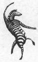

 The halls of academe are filling with a newly evolved species of scientist—the psychoneuroimmunologist—who makes a living studying the extraordinary fact that what goes on in your head can affect how well your immune system functions. Those two realms were once thought to be fairly separate—your immune system kills bacteria, makes antibodies, hunts for tumors; your brain makes you do the bunny hop, invents the wheel, has favorite TV shows. Yet the dogma of the separation of the immune and nervous systems has fallen by the wayside. The autonomic nervous system sends nerves into tissues that form or store the cells of the immune system and eventually enter the circulation. Furthermore, tissue of the immune system turns out to be sensitive to (that is, it has receptors for) all the interesting hormones released by the pituitary under the control of the brain. The result is that the brain has a vast potential for sticking its nose into the immune system’s business.
The evidence for the brain’s influence on the immune system goes back at least a century, dating to the first demonstration that if you waved an artificial rose in front of someone who is highly allergic to roses (and who didn’t know it was a fake), they’d get an allergic response. Here’s a charming and more recent demonstration of the brain influencing the immune system: take some professional actors and have them spend a day doing either a depressing negative scene, or an uplifting euphoric one. Those in the former state show decreased immune responsiveness, while those in the latter manifest an increase. (And where was such a study carried out? In Los Angeles, of course, at UCLA.) But the study that probably most solidified the link between the brain and the immune system used a paradigm called conditioned immunosuppression.
Give an animal a drug that suppresses the immune system. Along with it, provide, à la Pavlov’s experiments, a “conditioned stimulus”—for example, an artificially flavored drink, something that the animal will associate with the suppressive drug. A few days later, present the conditioned stimulus by itself—and down goes immune function. In 1982 the report of an experiment using a variant of this paradigm, carried out by two pioneers in this field, Robert Ader and Nicholas Cohen of the University of Rochester, stunned scientists. The two researchers experimented with a strain of mice that spontaneously develop disease because of overactivity of their immune systems. Normally, the disease is controlled by treating the mice with an immunosuppressive drug. Ader and Cohen showed that by using their conditioning techniques, they could substitute the conditioned stimulus for the actual drug—and sufficiently alter immunity in these animals to extend their life spans.
Studies such as these convinced scientists that there is a strong link between the nervous system and the immune system. It should come as no surprise that if the sight of an artificial rose or the taste of an artificially flavored drink can alter immune function, then stress can, too. In the first half of this chapter, I discuss what stress does to immunity and how this might be useful during a stressful emergency. In the second half, I’ll examine whether sustained stress, by way of chronic suppression of immunity, can impair the ability of a body to fight off infectious disease. This is a fascinating question, which can be answered only with a great deal of caution and many caveats. Although evidence is emerging that stress-induced immunosuppression can indeed increase the risk and severity of some diseases, the connection is probably relatively weak and its importance often exaggerated.
In order to evaluate the results of this confusing but important field, we need to start with a primer about how the immune system works.
Immune System Basics
The primary job of the immune system is to defend the body against infectious agents such as viruses, bacteria, fungi, and parasites. The process is dauntingly complex. For one thing, the immune system must tell the difference between cells that are normal parts of the body and cells that are invaders—in immunologic jargon, distinguishing between “self” and “non-self.” Somehow, the immune system can remember what every cell in your body looks like, and any cells that lack your distinctive cellular signature (for example, bacteria) are attacked. Moreover, when your immune system does encounter a novel invader, it can even form an immunologic memory of what the infectious agent looks like, to better prepare for the next invasion—a process that is exploited when you are vaccinated with a mild version of an infectious agent in order to prime your immune system for a real attack.
Such immune defenses are brought about by a complex array of circulating cells called lymphocytes and monocytes (which are collectively known as white blood cells; cyte is a term for cells). There are two classes of lymphocytes: T cells and B cells. Both originate in the bone marrow, but T cells migrate to mature in the thymus (hence the T), while B cells mature in the bone marrow. B cells principally produce antibodies, but there are several kinds of T cells (T helper and T suppressor cells, cytotoxic killer cells, and so on).
The T and B cells attack infectious agents in very different ways. T cells bring about cell-mediated immunity (illustration). When an infectious agent invades the body, it is recognized by a type of monocyte called a macrophage, which presents the foreign particle to a T helper cell. A metaphorical alarm is now sounded, and T cells begin to proliferate in response to the invasion. This alarm system ultimately results in the activation and proliferation of cytotoxic killer cells, which, as their name implies, attack and destroy the infectious agent. It is this, the T-cell component of the immune system, that is knocked out by the AIDS virus.
By contrast, B cells cause antibody-mediated immunity (illustration). Once the macrophage–T helper cell collaboration has occurred, the T helper cells then stimulate B-cell proliferation. The main task of the B cells is to differentiate and generate antibodies, large proteins that will recognize and bind to some specific feature of the invading infectious agent (typically, a distinctive surface protein). This specificity is critical—the antibody formed has a fairly unique shape, which will conform perfectly to the shape of the distinctive feature of the invader, like the fit between a lock and key. In binding to the specific feature, antibodies immobilize the infectious agent and target it for destruction.
The cascade of cell-mediated immunity. (1) An infectious agent is encountered by a type of monocyte called a macrophage. (2) This stimulates the macrophage to present the infectious agent to a T helper cell (a type of white blood cell) and to release interleukin-1 (IL-1), which stimulates T helper cell activity. (3) The T helper cell, as a result, releases interleukin-2 (IL-2), which triggers T-cell proliferation. (4) This eventually causes another type of white blood cell, cytotoxic killer cells, to proliferate and destroy the infectious agent.
The cascade of antibody-mediated immunity. (1) An infectious agent is encountered by a macrophage. (2) This encounter stimulates it to present the infectious agent to a T helper cell and to release interleukin-1 (IL-1), which stimulates T helper cell activity. (3) The T helper cell then secretes B-cell growth factor, triggering differentiation and proliferation of another white blood cell, B cells. (4) The B cells make and release specific antibodies that bind to surface proteins on the infectious agent, targeting it for destruction by a large group of circulating proteins known as complement.
There is an additional twist to the immune system. If different parts of the liver, for example, need to coordinate some activity, they have the advantage of sitting adjacent to each other. But the immune system is distributed throughout the circulation. In order to sound immune alarms throughout this far-flung system, blood-borne chemical messengers that communicate between different cell types, called cytokines, have evolved. For example, when macrophages first recognize an infectious agent, they release a messenger called interleukin-1. This triggers the T helper cell to release interleukin-2, which stimulates T-cell growth (to make life complicated, there are at least half a dozen additional interleukins with more specialized roles). On the antibody front, T cells also secrete B-cell growth factor. Other classes of messengers, such as interferons, activate broad classes of lymphocytes.
The process of the immune system sorting self and non-self usually works well (although truly insidious tropical parasites like those that cause schistosomiasis have evolved to evade your immune system by pirating the signature of your own cells). Your immune system happily spends its time sorting out self from non-self: red blood cells, part of us. Eyebrows, our side. Virus, no good, attack. Muscle cell, good guy….
What if something goes wrong with the immune system’s sorting? One obvious kind of error could be that the immune system misses an infectious invader; clearly, bad news. Equally bad is the sort of error in which the immune system decides something is a dangerous invader that really isn’t. In one version of this, some perfectly innocuous compound in the world around you triggers an alarm reaction. Maybe it is something that you normally ingest, like peanuts or shellfish, or something airborne and innocuous, like pollen. But your immune system has mistakenly decided that this is not only foreign but dangerous, and kicks into gear. And this is an allergy.
In the second version of the immune system overreacting, a normal part of your own body is mistaken for an infectious agent and is attacked. When the immune system erroneously attacks a normal part of the body, a variety of horrendous “autoimmune” diseases may result. In multiple sclerosis, for example, part of your nervous system is attacked; in juvenile diabetes, it’s the cells in the pancreas that normally secrete insulin. As we’ll see shortly, stress has some rather confusing effects on autoimmune diseases.
So far in this overview of the immune system, we’ve been concentrating on something called acquired immunity. Suppose you’re exposed to some novel, dangerous pathogen, pathogen X, for the first time. Acquired immunity has three features. First, you acquire the ability to target pathogen X specifically, with antibodies and cell-mediated immunity that specifically recognize that pathogen. This really works to your advantage—a bullet with pathogen X’s name written on it. Second, it takes some time to build up that immunity when you are first exposed to pathogen X—this involves finding which antibody has the best fit and generating a zillion copies of it. Finally, while you will now be geared up to specifically go after pathogen X for a long time to come once that specific defense is on line, repeated exposure to pathogen X will boost those targeted defenses even more.
Such acquired immunity is a pretty fancy invention, and it is found only in vertebrates. But we also contain a simpler, more ancient branch of the immune system, one shared with species as distant as insects, called innate immunity. In this realm, you don’t bother with acquiring the means to target pathogen X specifically with antibodies that will be different from those that would target, say, pathogen Y. Instead, the second any sort of pathogen hits your system, this nonspecific immune response swings into action.
This generalized immune response tends to occur at the beachhead where a pathogen gets its first foothold, like your skin, or moist mucosal tissue, like in your mouth or nose. As a first step, your saliva contains a class of antibodies that generically attack any sort of microbe that it encounters, instead of acquiring a means of targeting specific invaders. These antibodies are secreted and coat your mucosal surfaces like an antiseptic paint. In addition, at the site of infection, capillaries loosen up, allowing cells of the innate immune response to slip out of the circulation to infiltrate the immediate area of infection. These cells include macrophages, neutrophils, and natural killer cells, which then attack the microbe. The loosening of the capillaries also allows fluid containing proteins that can fight the invasive microbes to flow in from the circulation. And what happens as a result of that? The proteins fight the microbe, but the fluid also makes the area swell up, causing edema. This is your innate immune system leaping into action, causing inflammation.*
This gives us a broad overview of immune function. Time to see what stress does to immunity. Naturally, as it turns out, a lot more complicated things than used to be suspected.
Photomicrograph of a natural killer T cell attacking a tumor cell.
Inhibit Immune Function?
It’s been almost sixty years since Selye discovered the first evidence of stress-induced immunosuppression, noting that immune tissues like the thymus gland atrophied among rats subjected to nonspecific unpleasantness. Scientists have learned more about the subtleties of the immune system since then, and it turns out that a period of stress will disrupt a wide variety of immune functions.
Stress will suppress the formation of new lymphocytes and their release into the circulation, and shorten the time preexisting lymphocytes stay in the circulation. It will inhibit the manufacturing of new antibodies in response to an infectious agent, and disrupt communication among lymphocytes through the release of relevant messengers. And it will inhibit the innate immune response, suppressing inflammation. All sorts of stressors do this—physical, psychological, in primates, rats, birds, even in fish. And, of course, in humans, too.
The best-documented way in which such immune suppression occurs is via glucocorticoids. Glucocorticoids, for example, can cause shrinking of the thymus gland; this is such a reliable effect that in olden days (circa 1960), before it was possible to measure directly the amount of glucocorticoids in the bloodstream, one indirect way of doing so was to see how much the thymus gland in an animal had shrunk. The smaller the thymus, the more glucocorticoids in the circulation. Glucocorticoids halt the formation of new lymphocytes in the thymus, and most of the thymic tissue is made up of these new cells, ready to be secreted into the bloodstream. Because glucocorticoids inhibit the release of messengers like interleukins and interferons, they also make circulating lymphocytes less responsive to an infectious alarm. Glucocorticoids, moreover, cause lymphocytes to be yanked out of the circulation and stuck back in storage in immune tissues. Most of these glucocorticoid effects are against T cells, rather than B cells, meaning that cell-mediated immunity is more disrupted than antibody-mediated immunity. And most impressively, glucocorticoids can actually kill lymphocytes. This taps into one of the hottest topics in medicine, which is the field of “programmed cell death.”* Cells are programmed to commit suicide sometimes. For example, if a cell begins to become cancerous, there is a suicide pathway that gets activated to kill the cell before it starts dividing out of control; a few types of cancers involve the failure of the programmed cell death to occur. It turns out that glucocorticoids can trigger those suicide pathways into action in lymphocytes, through a variety of mechanisms.
Sympathetic nervous system hormones, beta-endorphin, and CRH within the brain also play a role in suppressing immunity during stress. The precise mechanisms by which this happens are nowhere near as well understood as with glucocorticoid-induced immune suppression, and these other hormones have traditionally been viewed as less important than the glucocorticoid part of the story. However, a number of experiments have shown that stressors can suppress immunity independently of glucocorticoid secretion, strongly implicating these other routes.
Why is Immunity
Suppressed During Stress?
Figuring out exactly how glucocorticoids and the other stress hormones suppress immunity is a very hot topic these days in cell and molecular biology, especially the part about killing lymphocytes. But amid all this excitement about cutting-edge science, it would be reasonable to begin to wonder why you should want your immune system suppressed during stress. In chapter 1, I offered an explanation for this; now that the process of stress-induced immunosuppression has been explained in a little more detail, it should be obvious that my early explanation makes no sense. I suggested that during stress it is logical for the body to shut down long-term building projects in order to divert energy for more immediate needs—this inhibition includes the immune system, which, while fabulous at spotting a tumor that will kill you in six months or making antibodies that will help you in a week, is not vital in the next few moments’ emergency. That explanation would make sense only if stress froze the immune system right where it was—no more immune expenditures until the emergency is finished. However, that is not what happens. Instead, stress causes the active expenditure of energy in order to disassemble the preexisting immune system—tissues are shrunk, cells are destroyed. This cannot be explained by a mere halt to expenditures—you’re paying, energetically, to take apart the immune system. So out goes this extension of the long-term versus short-term theory.
Why should evolution set us up to do something as apparently stupid as disassembling our immune system during stress? Maybe there isn’t a good reason. This actually isn’t as crazy of a response as you might think. Not everything in the body has to have an explanation in terms of evolutionary adaptiveness. Maybe stress-induced immunosuppression is simply a by-product of something else that is adaptive; it just came along for the ride.
This is probably not the case. During infections, the immune system releases the chemical messenger interleukin-1, which among other activities stimulates the hypothalamus to release CRH. As noted in chapter 2, CRH stimulates the pituitary to release ACTH, which then causes adrenal release of glucocorticoids. These in turn suppress the immune system. In other words, under some circumstances, the immune system will ask the body to secrete hormones that will ultimately suppress the immune system. For whatever reason the immunosuppression occurs, the immune system sometimes encourages it. It is probably not just an accident.*
Various ideas have floated around over the years to explain why you actively disassemble immunity during stress with the willing cooperation of the immune system. Some seemed fairly plausible until people learned a bit more about immunity and could rule them out. Others were quite nutty, and I happily advocated a few of these in the first edition of this book. But in the last decade, an answer has emerged, and it really turns this field on its head.
Surprise
It turns out that during the first few minutes (say, up to about thirty) after the onset of a stressor, you don’t uniformly suppress immunity—you enhance many aspects of it (phase A on the accompanying graph). This is shown with all realms of immunity, but in particular for innate immunity. This makes sense—it may be helpful to activate parts of your immune system that are going to make some swell antibodies for you over the next few weeks, but it makes even more sense to immediately activate parts of the immune system that are going to help you out right now. More immune cells are rushed into the circulation and, in the injured nervous system, more inflammatory cells infiltrate the site of injury. Moreover, circulating lymphocytes are better at releasing and responding to those immune messengers. And more of those generic antibodies of the innate immune system are released into your saliva. This boosting of immunity doesn’t occur only after some infectious challenge. Physical stressors, psychological stressors, all appear to cause an early stage of immune activation. Even more surprisingly, those immunosuppressive villains, glucocorticoids, appear to play a major role in this (along with the sympathetic nervous system).
So, with the onset of all sorts of stressors, your immune defenses are enhanced. And now we are ready for our usual other side of the two-edged sword, when the stress goes on longer. By the one-hour mark, more sustained glucocorticoid and sympathetic activation begins to have the opposite effect, namely, suppressing immunity. If the stressor ends around then, what have you accomplished with that immunosuppression? Bringing immune function back to where it started, back to baseline (phase B). It is only with major stressors of longer duration, or with really major exposure to glucocorticoids, that the immune system does not just return to baseline, but plummets into a range that really does qualify as immunosuppressing (phase C). For most things that you can measure in the immune system, sustained major stressors drive the numbers down to 40 to 70 percent below baseline.
Stress turns out to transiently stimulate the immune system.
The idea of temporarily perking up your immune system with the onset of a stressor makes a fair amount of sense (certainly at least as much as some of the convoluted theories as to why suppressing it makes sense). As does the notion that what goes up must come down. And as does the frequent theme of this book, namely, that if you have a stressor that goes on for too long, an adaptive decline back to baseline can overshoot and you get into trouble.
Why did it take people so long to figure this out? Probably for two reasons. First, because many of the techniques for measuring what’s happening in the immune system have only recently become sensitive enough to pick up small, rapid differences, the thing needed to catch phase A, that fast immunostimulatory blip at the beginning of a stressor. Thus, for decades, people thought they were studying the immune response to stress, whereas they were actually studying the recovery of the immune response to stress. As a second reason, most scientists in this field study major, prolonged stressors, or administer major amounts of glucocorticoids for prolonged periods. This represents a reasonable bias in how experiments are done—start with a sledgehammer of an experimental manipulation. If nothing happens, pick a new field to study. If something does happen and it’s been replicated enough times that you’re confident about it, only then begin to think about more subtle elaborations. So in the early years, people were only studying the sorts of stressors or patterns of glucocorticoid exposure that pushed into phase C, and only later got around to the subtler circumstances that would reveal phase B.
This reorientation of the field represents a triumph for Allan Munck of Dartmouth University, one of the godfathers of the field, who predicted most of these new findings in the mid-1980s. He also predicted what turns out to be the answer to a question that pops up after a while. Why would you want to bring immune function back down to the prestress level (phase B in the diagram)? Why not just let it remain at the enhanced, improved level achieved in the first thirty minutes and get the benefits of an activated immune system all the time? Metaphorically, why not have your military that defends you always on maximal alert? For one thing, it costs too much. And, even more important, a system that’s always on maximal, hair-trigger alert is more likely to get carried away at some point and shoot one of your own guys in a friendly fire accident. And that’s what can happen with immune systems that are chronically activated—they begin to mistake part of you for being something invasive, and you’ve got yourself an autoimmune disease.
Such reasoning led Munck to predict that if you fail to have phase B, if you don’t coast that activated immune system back down to baseline, you’re more at risk for an autoimmune disease. This idea has been verified in at least three realms. First, artificially lock glucocorticoid levels in the low basal range in rats and then stress them. This produces animals that have phase A (mostly mediated by epinephrine), but there isn’t the rise in glucocorticoids to fully pull off phase B. The rats are now more at risk for autoimmune disease. Second, doctors have to occasionally remove one of the two adrenal glands (the source of glucocorticoids) from a patient, typically because of a tumor. Immediately afterward, circulating glucocorticoid levels are halved for a period, until the remaining adrenal bulks up enough to take on the job of two. During that period of low glucocorticoid levels, people are more likely than normal to flare up with some autoimmune or inflammatory disease—there’s not enough glucocorticoids around to pull off phase B when something stressful occurs. Finally, if you look at strains of rats or, weirdly, chickens, that spontaneously develop autoimmune diseases, they all turn out to have something wrong with the glucocorticoid system so that they have lower than normal levels of the hormone, or have immune and inflammatory cells that are less responsive than normal to glucocorticoids. Same for humans with autoimmune diseases like rheumatoid arthritis.
A schematic representation of how a failure to inhibit immune function during stress can bias you toward autoimmune disease.
Thus, early on in the stress-response, the immune system is being activated, rather than inhibited, and a big thing that the stress-response does is make sure that immune activation doesn’t spiral into autoimmunity.
So that has forced some revisionism in this field. But just to add to this, once stress has gone on long enough to begin to suppress immunity, some of what have classically been taken to be aspects of immune suppression are actually more subtle versions of immune enhancement.
This is seen in two ways. Give someone massive amounts of glucocorticoids, or a huge stressor that has gone on for many hours, and the hormones will be killing lymphocytes indiscriminately, just mowing them down. Have a subtle rise in glucocorticoid levels for a short time (like what is going on at the start of phase B), and the hormones kill only a particular subset of lymphocytes—older ones, ones that don’t work as well. Glucocorticoids, at that stage, are helping to sculpt the immune response, getting rid of lymphocytes that aren’t ideal for the immediate emergency. So that indirectly counts as a version of immune enhancement.
A second subtlety reflects reinterpretation of something people have known since the dawn of humans (or at least during Selye’s prime). As noted, glucocorticoids not only kill lymphocytes, but also yank some remaining lymphocytes out of the circulation. Firdhaus Dhabhar of Ohio State University asked, Where do those immune cells go when they are pulled out of the circulation? The assumption in the field had always been that they all go into immune storage tissues (like the thymus gland)—they’re taken out of action, so that they aren’t much use to you. But Dhabhar’s work shows that they don’t all get mothballed. Instead, glucocorticoids and epinephrine are diverting many of those lymphocytes to the specific site of infection, such as the skin. The immune cells aren’t being deactivated—they’re being transferred to the front lines. And a consequence of this is that wounds heal faster.
Thus, early on during exposure to a stressor, glucocorticoids and other stress-responsive hormones transiently activate the immune system, enhancing immune defenses, sharpening them, redistributing immune cells to the scenes of infectious battle. Because of the dangers of the systems overshooting into autoimmunity, more prolonged glucocorticoid exposure begins to reverse these effects, bringing the system back to baseline. And during the pathological scenario of truly major, sustained stressors, immunity is suppressed below baseline.
These new findings help to explain one of the persistent paradoxes in this field. It concerns autoimmune diseases. Two facts about autoimmunity:
1. Insofar as autoimmune diseases involve over activation of the immune system (to the point of considering a healthy constituent of your body to actually be something invasive), the most time-honored treatment for such diseases is to put people “on steroids”—to give them massive amounts of glucocorticoids. The logic here is obvious: by dramatically suppressing the immune system it can no longer attack your pancreas or nervous system, or whatever is the inappropriate target of its misplaced zeal (and, as an obvious side effect to this approach, your immune system will also not be very effective at defending you against real pathogens). Thus, administration of large amounts of these stress hormones makes autoimmune diseases less damaging. Moreover, prolonged major stressors decrease the symptoms of autoimmune diseases in lab rats.
2. At the same time, it appears that stress can worsen autoimmune diseases. Stress is among the most reliable, if not the most reliable, factor to worsen such diseases. This has often been reported anecdotally by patients, and is typically roundly ignored by clinicians who know that stress hormones help reduce autoimmunity, not worsen it. But some objective studies also support this view for autoimmune diseases such as multiple sclerosis, rheumatoid arthritis, Grave’s disease, ulcerative colitis, inflammatory bowel disease, and asthma. There have been only a handful of such reports, and they suffer from the weakness of relying on patient-reported retrospective data, rather than on prospective data. Nevertheless, their findings are relatively consistent—there is a subset of patients whose initial onset of an autoimmune disease and, to an even greater extent, their intermittent flare-ups of bad symptoms are yoked to stress. Moreover, there is, by now, a pretty hefty literature showing that stress can worsen autoimmunity in animal models of these diseases.
So, do glucocorticoids and stress worsen or lessen the symptoms of autoimmunity? The graph below gives an answer that wasn’t clear in earlier years. We’ve now seen two scenarios that increase the risk of autoimmune disease. First, it seems as if numerous transient stressors (that is, lots of phases A and B) increase the risk of autoimmunity—for some reason, repeated ups and downs ratchet the system upward, biasing it toward autoimmunity. Second, while it seems not to be great to have lots of instances of phase A followed by phase B, having phase A not followed by phase B increases the risk of autoimmunity as well. If you don’t have an adequate phase B, that pushes the immune system spiral upward into autoimmunity (diagram).
A schematic representation of how repeated stress increases the risk of autoimmune disease.
As we would now expect, if you instead have massive prolonged stressors, or are administered big hefty doses of glucocorticoids, you put the system in phase C—dramatic immune suppression, which decreases the symptoms of autoimmunity. Supporting this summary is the finding that while acute stress puts rats more at risk for a model of multiple sclerosis, chronic stress suppresses the symptoms of that autoimmune disease. The system apparently did not evolve for dealing with numerous repetitions of coordinating the various on-and-off switches, and ultimately something uncoordinated occurs, increasing the risk that the system becomes autoimmune.
Chronic Stress and Disease Risk
A repeated theme in this book is how some physiological response to your average, run-of-the-mill mammalian stressor, if too long or too frequent, gets you into trouble. The ability of major stressors to suppress immunity below baseline certainly seems like a candidate for this category. How damaging is stress-induced immunosuppression when it actually occurs? As the AIDS virus has taught us, if you suppress the immune system sufficiently, a thirty-year-old will fester with cancers and pneumonias that doctors used to see once in an elderly patient during a fifty-year career. But can chronic stress suppress the immune system to the point of making you more susceptible to diseases you wouldn’t otherwise get? Once you have a disease, are you now less capable of fighting it off?
Evidence pouring in from many quarters suggests that stress may indeed impair our immune systems and increase the risk of illness. But despite these striking findings, it remains far from clear just how much chronic stress makes you more vulnerable to diseases that would normally be fought off by the immune system. In order to appreciate the current disarray of the research, let us try to break down the findings into their component parts.
Essentially, all these studies show a link between something that increases or decreases stress and some disease or mortality outcome. The approach of many psychoneuroimmunologists is based on the assumption that this link is established through the following steps:
1. The individuals in question have been stressed,
2. causing them to turn on the stress-response (the secretion of glucocorticoids, epinephrine, and so on).
3. The duration and magnitude of the stress-response in these individuals is big enough to suppress immune function,
4. which increases the odds of these individuals getting some infectious disease, and impairs their ability to defend themselves against that disease once they have it.
Thus, suppose you see that a certain immune-related disease is more common in circumstances of stress. You now have to ask two critical questions. First, can you show that steps 1 to 4 occurred in those stressed individuals with that disease? Second, is there some alternative route that explains starting with stress and getting to the disease?
Let’s begin by analyzing those four separate steps, in order to see how tough it is to demonstrate that all four have occurred.
Step 1, “The individuals in question have been stressed.” In studies of nonhuman animals, the general consensus is that with enough stress, you are going to get to steps 2 through 4. But a problem in extrapolating to humans is that the experimental stressors used in animal studies are usually more awful than what we typically experience. Not only that, but we differ tremendously among ourselves as to what we experience as truly stressful—the whole realm of individual differences that will be the focus of the last chapter of this book. Therefore, if you try to study the effects of stressors on people’s immune systems, you must wrestle with the problem of whether these things actually seem stressful to a given individual or not. What that winds up meaning is that step 1 is probably satisfied in stress/immune-related disease studies that involve events that most everyone would consider pretty awful—the death of a loved one, divorce, financially threatening unemployment. But if the external reality is one that a lot of people would not consider to be stressful, you can’t automatically accept that you’re at step 1.
There is another problem with step 1: it’s often not clear whether humans are really exposed to the stressors to which they claim they’re exposed. We tend to be notoriously bad reporters of what goes on in our lives. An imaginary experiment: take one hundred lucky people and slip them a drug that will give them bad stomachaches for a few days. Then send them to a doctor secretly participating in this experiment, who tells them that they have developed stomach ulcers. The doctor asks innocently, “Have things been particularly stressful for you recently?” Perhaps ninety of those subjects will come up with something or other putatively stressful to which they will now attribute the ulcer. In retrospective studies, people confronted with an illness are very likely to decide there were stressful events going on. When you rely heavily on retrospective studies with humans, you are likely to get a falsely strong link between stress and disease; and the trouble is, most studies in this field are retrospective (a problem that popped up in the chapter on digestive disorders as well). The expensive and lengthy prospective studies are only recently becoming more common—pick a bunch of healthy people and follow them for decades to come, recording as an objective outsider when they are being exposed to stressors and whether they become sick.
We move to the next step: from the stressor to the stress-response (step 1 to step 2). Again, if you give an organism a massive stressor, it will reliably have a strong stress-response. With more subtle stressors, we have more subtle stress-responses.
The same thing holds for the move from step 2 to step 3. In experimental animal studies, large amounts of glucocorticoids will cause the immune system to hit the floor. The same occurs if a human has a tumor that causes massive amounts of glucocorticoids to be secreted (Cushing’s syndrome), or if a person is taking huge doses of synthetic glucocorticoids to control some other disease. But as we now know, the moderate rises in glucocorticoid levels seen in response to many more typical stressors stimulate the immune system, rather than suppress it. Moreover, in a few types of cancers elevated levels of glucocorticoids should be protective. As we saw in the last chapter, very high levels of glucocorticoids will suppress levels of estrogens in females and testosterone in males, and certain types of cancers are stimulated by these hormones (most notably “estrogen-sensitive” forms of breast cancer and “androgen-sensitive” prostate cancers). In these cases, lots of stress equals lots of glucocorticoids equals less estrogen or testosterone equals slower tumor growth.
Moving from step 3 to step 4, how much does a change in immune profile alter patterns of disease? The odd thing is that immunologists are not sure about this. If your immune system is massively suppressed, you are more likely to get sick, no doubt about that. People taking high doses of glucocorticoids as medication, who are thus highly immunocompromised, are vulnerable to all sorts of infectious diseases, as are people with Cushing’s syndrome. Or AIDS.
The more subtle fluctuations in immunity are less clear in their implications, however. Few immunologists would be likely to assert that “for every tiny decrease in some measure of immune function, there is a tiny increase in disease risk.” Their hesitancy is because the relationship between immune competence and disease may be nonlinear. In other words, once you pass a certain threshold of immunosuppression, you are up the creek without a paddle; but before that, immune fluctuations may not really matter much. The immune system is so complex that being able to measure a change in one little piece of it in response to stress may mean nothing about the system as a whole. Thus, the link between relatively minor immune fluctuation and patterns of disease in humans winds up being relatively weak.
There is another reason why it may be difficult to generalize from findings in the laboratory to the real world. In the laboratory, you might be studying the effects of steps 1, 2, and 3 on disease outcome 4. It is inconvenient for most scientists to manipulate a rat’s levels of stress, glucocorticoids, or immunity and then wait for the rest of the rat’s lifetime to see if it is more likely to become ill than is a control rat. That’s slow and expensive. Typically, instead, scientists study induced diseases. Manipulate step 1, 2, or 3 in a rat that has been exposed to a certain virus; then see what happens. When you do that, you get information about steps 1 through 3 that have to do with step 4 when dealing with severe, artificially induced disease challenges. But it should be obvious that an approach like this misses the point that we don’t get sick because some scientist deliberately exposes us to disease. Instead, we spend our lives passing through a world filled with scattered carcinogenic substances, occasional epidemics, someone sneezing from across the room. Relatively few experimental animal studies have looked at spontaneous diseases, rather than induced ones.
These are a lot of caveats. Let’s consider some areas where there are links between stress and diseases associated with immune dysfunction. This will let us evaluate to what extent these links are a function of progressing from steps 1 through 4, what we will call the “Psychoneuroimmune Route,” which links stress and disease. In each case, we’ll consider if there is an alternative sequence, what we’ll loosely call the “Lifestyle Route,” which can link stress and immune-related disease while bypassing the sequence of steps 1 to 4.
Testing the Stress-Disease Link
Social Support and Social Isolation
What the data show: the fewer social relationships a person has, the shorter his or her life expectancy, and the worse the impact of various infectious diseases. Relationships that are medically protective can take the form of marriage, contact with friends and extended family, church membership, or other group affiliations. This is a fairly consistent pattern that cuts across a lot of different settings. Moreover, these general findings are based on some careful prospective studies and are seen in both sexes and in different races, in American and European populations living in both urban and rural areas. Most important, this effect is big. The impact of social relationships on life expectancy appears to be at least as large as that of variables such as cigarette smoking, hypertension, obesity, and level of physical activity. For the same illness, people with the fewest social connections have approximately two-and-a-half times as much chance of dying as those with the most connections, after controlling for such variables as age, gender, and health status.
Very exciting. And what might explain this relationship? Maybe it’s through the Psychoneuroimmune Route of steps 1 to 4, which would run something like: socially isolated people are more stressed for lack of social outlets and support (step 1); this leads to chronic activation of stress-responses (step 2); leading to immune suppression (step 3); and more infectious diseases (step 4).
Let’s see what support there is for each of these steps. First, just because someone is socially isolated doesn’t mean they are stressed by it—there are lots of hermits who would be happy to pass on yet another crowded Twister party. Social isolation as a stressor is a subjective assessment. In many of these studies, however, the subjects who fit the bill as socially isolated rate themselves as lonely, certainly a negative emotion. So we can check off step 1. On to step 2—do these people have chronically overactive stress-responses? We have little evidence for or against that.
How about step 3—is social isolation associated with damping down some aspect of immune function? There’s a lot of evidence for that: lonelier, more socially isolated individuals having less of an antibody response to a vaccine in one study; in another study of people with AIDS, having a faster decline in a key category of lymphocytes; in another, of women with breast cancer, having less natural killer cell activity.
Then on to step 4—can you actually show that that degree of immune suppression played a role in the disease occurring? The facts are relatively weak. Some studies show social isolation and step 3; others show isolation and step 4, but few show both and also explicitly show that the magnitude of step 3 has something to do with the transition to step 4.
Still, there is relatively good evidence for this pathway being relevant. What about the Lifestyle Route? What if the problem is that socially isolated people lack that special someone to remind them to take their daily medication? It is known that isolated people are less likely to comply with a medical regime. What if they’re more likely to subsist on reheated fast food instead of something nutritious? Or more likely to indulge in some foolish risk-taking behavior, like smoking, because there’s no one to try to convince them to stop? Many lifestyle patterns could link social isolation with more infectious disease, bypassing this sequence of steps. Or what if the causality is reversed—what if the linkage occurs because sickly people are less likely to be able to maintain stable social relationships?
Numerous studies have controlled for these lifestyle risk factors like smoking, diet, or medication compliance and have shown that the isolation/poor health outcome relationship is still there. Moreover, critically, you can show the same in nonhuman primates, who don’t confound their health with Big Macs, alcohol, and smoking. Infect monkeys with SIV (the simian equivalent of HIV) and more socially isolated animals had higher glucocorticoid levels, fewer antibodies against the virus, more virus in their system, and a greater mortality rate—in other words, steps 1 to 4.
Overall, I’d say a pretty good case can be made that social isolation can impact health through the effects of stress on immunity. But the case isn’t airtight.
Bereavement
Bereavement, an extreme version of social isolation, is, of course, the loss of a loved one. An extensive literature shows that while bereavement often coincides with depression, it is distinct from it. A common belief is that the one left behind—the grieving spouse, the bereft parent, even the masterless pet—now pines away to an early death. A number of studies suggest that bereavement does indeed increase the risk of dying, although the effect is not all that strong. This is probably because the risk occurs only in a subset of grievers, amid those people who have an additional physiological or psychological risk factor coupled with the bereavement. In one careful prospective study, the parents of all the Israeli soldiers who died in the Lebanese war were followed for ten years afterward. Loss of a child did not affect mortality rates in the population of grieving parents in general. However, significantly higher mortality rates occurred among parents who were already widowed or divorced. In other words, this stressor is associated with increased mortality in the subset of parents with the added risk factor of minimal social support.
Thus, we are turfed back to the subject of social isolation. Again, the evidence for the Psychoneuroimmune Route occurring is decent but, again, there are many potential Lifestyle Routes—grieving people are unlikely to be eating, sleeping, exercising in a healthy manner. Sometimes the confound is more subtle. People tend to marry people who are ethnically and genetically quite similar to themselves. Intrinsic in this trend toward “homogamy” is a tendency of married couples to have higher-than-random chances of sharing environmental risk factors (as well as to disproportionately share disease-related genes, making this component of the Lifestyle Route not really related to lifestyle). This makes it more likely that they will get sick around the same time. Nonetheless, amid those confounds, the Psychoneuroimmune Route’s steps 1 to 4 are probably relevant to the increased mortality rates among bereaved individuals lacking social support.
The Common Cold
Everybody knows that being stressed increases your chances of getting a cold. Just think back to being run down, frazzled, and sleep-deprived during final exams, and, sure enough, there’s that cough and runny nose. Examine the records at university health services and you’ll see the same thing—students succumbing to colds left and right around exam period. Many of us continue to see the same pattern decades later—burn the candle at both ends for a few days and, suddenly, there’s that scratchy throat.
Psychoneuroimmune Route steps 1 to 4 seem quite plausible. Some of the studies involve some pretty hefty external events that most people would consider stressful, like financially disastrous unemployment (step 1). But few have looked at the magnitude of the stress-response (step 2). Changes in relevant immune measures have been documented, however—for example, in studies in which stress increases the risk of a cold, those same individuals are shown to have less of the cold-fighting class of antibodies that are secreted in your saliva and nasal passageways (steps 3 and 4).
But we have to consider some possible Lifestyle Route confounds. Maybe the disruptive effects of stress on memory (stay tuned for chapter 10) cause us to forget to button up our overcoats. Or maybe when we are under stress due to social isolation, we are more willing to consort with people who sneeze recklessly without covering their faces.
Okay, maybe those aren’t confounds you have to worry about too much. But stress changes lifestyle and different lifestyles mean differing degrees of exposure to the viruses that cause colds.
That possibility has been controlled for in a celebrated series of studies. In one version, some cheerfully compliant volunteers were housed under conditions where some major lifestyle confounds were controlled for. They then filled out questionnaires regarding how stressed they were. Subjects were then spritzed up their noses with equal amounts of rhinovirus, the bug that causes the common cold. Note that everyone was exposed to the same amount of pathogen. And the results? (Fanfare.) More stress equaled about three times the likelihood of succumbing to a cold after being exposed to the virus. Prolonged stressors more than a month long that were social in nature provided the greatest risk.* Moreover, the same thing works in laboratory mice and nonhuman primates—spritz them with rhinovirus, and it is the stressed, socially subordinate animals who get their species’ equivalent of the sniffles.
Collectively, it seems pretty convincing that stress makes the common cold more common at least partially along the Psychoneuroimmune Route.
Aids
Given that AIDS is a disease of profound immunosuppression, and that major stressors suppress the immune system, can stress increase the likelihood that someone who is HIV positive develops AIDS? And once AIDS is established, can stress worsen its course?
These questions have been aired since the AIDS epidemic began. Since the last edition of this book, the triple combination antiretroviral therapy has turned AIDS from a fatal disease to an often manageable chronic one, making these questions even more relevant.*
There is some good indirect evidence to think that stress can alter the course of AIDS. Suppose you grow human lymphocytes in a petridish and expose them to HIV. If you expose the cells to glucocorticoids as well, they become more likely to be infected with the virus. Moreover, norepinephrine can also make it easier for the virus to invade a lymphocyte and, once inside, enhances replication of the virus. Support also comes from a study with nonhuman primates, discussed earlier, which suggests that steps 1 to 4 might apply to HIV. To reiterate, the monkeys were infected with SIV, the simian version of HIV. The authors then showed that the monkeys who were more socially isolated (step 1) had higher glucocorticoid levels (step 2), fewer antibodies against the virus (step 3), and a higher mortality rate (step 4). How about humans?
To begin, starting with the same amount of HIV in your system, a faster decline and a higher mortality rate occur, on average, among people who have any of the following: (a) a coping style built around denial; (b) minimal social support; (c) a socially inhibited temperament; (d) more stressors, particularly loss of loved ones. These are not huge effects but, nevertheless, there seems a fair consistency in the findings on this. So that seems to qualify for step 1.
Do these individuals also have overactive stress-responses (step 2)? Glucocorticoid levels are not particularly predictive of the course of HIV. However, the more at-risk people with the socially inhibited temperaments have elevated activity of their sympathetic nervous system, and the extent of that overactivity is an even better predictor of decline than is the personality itself. So that seems to get us to step 2.
Does lots of stress, an inhibited temperament, denial, or lack of social support not only predict higher mortality rates (step 4) but a faster decline of immune function (step 3)? That seems to be the case as well.
So AIDS seems to follow the Psychoneuroimmune Route. How about the Lifestyle Route? The medication regimes for dealing with HIV can be enormously complex, and it is quite plausible that people who are more stressed are less likely to take their antiviral medication, or to take it correctly. My sense is that lifestyle risk factors have not been all that well controlled for in these studies. How about if the connection runs in the opposite direction—what if having a faster decline with the disease makes you more socially inhibited, makes for fewer social connections? That seems quite plausible but, as an important control, the personality style has been shown to predict immune profiles many months later.
In summary, psychoneuroimmune aspects could well contribute to a link between stress and worsening of aspects of AIDS. But more research needs to be done to examine how much stress influences whether people comply with their treatment regimes, versus how well their treatment regimes work.
Latent Viruses
After rhinoviruses and the AIDS virus, there is one last category of viruses—those that, after initially infecting you, can go latent. “Latency” means that the virus, once burrowing into some cells of yours, goes into hibernation for a while, just lurking near your own cellular DNA, but not yet replicating itself. At some later point, something triggers the dormant virus out of latency and it reactivates. After going through a couple of rounds of replication the by now larger number of viral particles burrow in and go latent again. The classic example are herpes viruses which, after infecting some of your neurons, can go latent for years, even decades, before flaring up out of latency.
This is a clever tactic that viruses have evolved. Infect some cells, replicate, burst the cells open in the process, make the sort of mess of things that sets off all sorts of alarms in the immune system and, just as those activated immune cells are about to pounce, burrow into another round of cells. While the immune cells are cleaning up, the virus goes latent again.
The next clever thing that viruses have done? They don’t reactivate at any old time. They wait until the immune system of the host organism is lousy, and then gun for some quick rounds of replication. And when are immune systems often at their lousiest? You got it. It’s been endlessly documented that latent viruses like herpes flare up during times of physical or psychological stress in all sorts of species. It’s the same thing with some other viruses that go latent, like Epstein-Barr virus and varicella-zoster (which causes chicken pox and shingles).
So hats off to these highly evolved viruses. Now a key question. How does a latent herpes virus that, after all, is just some unschooled little stretch of DNA sitting mothballed inside a bunch of your neurons, know that you are immunosuppressed? One possibility is that herpes is always attempting to come out of latency and, if your immune system is working fine, it snuffs out the attempt. A second possibility is that herpes can somehow measure how the immune system is doing.
Amazingly, the answer has emerged in the last few years. Herpes doesn’t measure how your immune system is doing. It measures something else that, for its purposes, gives it the information it needs—it measures your glucocorticoid levels. Herpes DNA contains a stretch that is sensitive to elevated glucocorticoid signals, and when levels are up, that DNA sensor activates the genes involved in coming out of latency. Epstein-Barr and varicella-zoster contain this glucocorticoid-sensitive stretch as well.
And now for something even more fiendishly clever. You know what else herpes can do once it infects your nervous system? It causes your hypothalamus to release CRH which releases ACTH which raises glucocorticoid levels. Unbelievable, huh? So you don’t even need a stressor. Herpes infects you, artificially pushes you to step 2 with your elevated glucocorticoid levels, which gets you to step 3, and allows the virus to come out of latency. Moreover, elevated glucocorticoid levels impair your immune defenses against activated herpes. This leads to step 4—a cold sore flare-up. And we think we’re so clever with our big brains and opposable thumbs.
We’ve now looked at several favorite topics in psychoneuroimmunology, and can see that stress can increase the likelihood, the severity, or both of some immune-related diseases. All of this is a prelude for considering the most contentious subject in this whole field. The punch line is one of the most important in this book, and runs counter to what is distressingly common folk wisdom.
Stress and the Big C
What does stress have to do with getting cancer?
The first piece of evidence suggesting stress may increase the risk of a cancer diagnosis comes from animal studies. There is, by now, a reasonably convincing animal-experimentation literature showing that stress affects the course of some types of cancer. For example, the rate at which some tumors grow in mice can be affected merely by what sort of cages the animals are housed in—the more noisy and stressful, the faster the tumors grow. Other studies show that if you expose rats to electric shocks from which they can eventually escape, they reject transplanted tumors at a normal rate. Take away the capacity to escape, yet give the same total number of shocks, and the rats lose their capacity to reject tumors. Stress mice by putting their cages on a rotating platform (basically, a record player), and there is a tight relationship between the number of rotations and the rate of tumor growth. Substitute glucocorticoids for the rotation stressor, and tumor growth is accelerated as well. These are the results of very careful studies performed by some of the best scientists in the field.
Does stress work through the Psychoneuroimmune Route in these animals? Seemingly at least partially. These stressors raise glucocorticoid levels in these studies. And these glucocorticoids directly influence tumor biology through both immune and non-immune realms. As a first mechanism, the immune system contains a specialized class of cells (most notably, natural killer cells) that prevent the spread of tumors. Stress suppresses the numbers of circulating natural killer cells in these studies. A second route is probably non-immunologic. Once a tumor starts growing, it needs enormous amounts of energy, and one of the first things that tumors do is send a signal to the nearest blood vessel to grow a bush of capillaries into the tumor. Such angiogenesis allows for the delivery of blood and nutrients to the hungry tumor. Glucocorticoids, at the concentration generated during stress, aid angiogenesis. A final route may involve glucose delivery. Tumor cells are very good at absorbing glucose from the bloodstream. Recall the zebra sprinting away from the lion: energy storage has stopped in order to increase concentrations of circulating glucose to be used by the muscles. But, as my own lab reported some years back, when circulating glucose concentrations are elevated in rats during stress, at least one kind of experimental tumor can grab the glucose before the muscle does. Your storehouses of energy, intended for your muscles, are being emptied and inadvertently transferred to the ravenous tumor instead.
So we have some stress-cancer links in animals, and some psychoneuroimmune mechanisms to explain those effects. Does this apply to humans? Two big features of these animal studies dramatically limit their relevance to us. First, these were studies of induced tumor, where tumorous cells are injected or transplanted into the animal. So we’re not looking at stress causing cancer in these animals, we’re looking at stress altering the course of cancers introduced by artificial routes. No animal studies to my knowledge have shown that stress increases the incidence of spontaneous tumors. Furthermore, most of these studies have relied on tumors that are caused by viruses. In such cases, viruses take over the replication machinery of a cell and cause it to start dividing and growing out of control. In humans most cancers arise from genetic factors or exposure to environmental carcinogens, rather than from viruses, and those have not been the subject of study with laboratory animals. So a cautionary note from the animal studies: stress can accelerate the growth of a number of tumors, but these are types of cancers of limited relevance to humans, and introduced through completely artificial means.
Thus, we turn our attention to humans. Our first, simplest question: Is a history of major stressors associated with an increased risk of having cancer somewhere down the line?
A number of studies seemed to show this, but they all suffered from the same problem, namely, that they were retrospective. Again, someone with a cancer diagnosis is more likely to remember stressful events than someone with a bunion. How about if you do a retrospective study where you rely upon a history of verifiable stressors, like the death of a family member, loss of a job, or a divorce? A couple of studies have reported a link between such major stressors and the onset of colon cancer five to ten years later. A number of studies, especially of breast cancer patients, have had a “quasi-prospective” design, assessing stress histories of women at the time that they are having a biopsy for a breast lump, comparing those who get a cancer diagnosis with those who don’t. Some of these studies have shown a stress-cancer link, and this should be solid—after all, there can’t be a retrospective bias, if the women don’t know yet if they have cancer. What’s the problem here? Apparently, people can guess whether it will turn out to be cancer at a better than chance rate, possibly reflecting knowledge of a family history of the disease, or personal exposure to risk factors. Thus, such quasi-prospective studies are already quasi-retrospective, and of the least reliable kind.
When you rely on the rare prospective studies, there turns out not to be good evidence for a stress-cancer link. For example, as we will see in chapter 14 on depression, having a major depression is closely linked to both stress and excessive glucocorticoid secretion, and one famous study of two thousand men at a Western Electric plant showed that depression was associated with doubling the risk of cancer, even up to decades later. But a careful reexamination of those data showed that the depression-cancer link was attributable to a subset of men who were depressed as hell because they were stuck working with some major carcinogens.
Subsequent prospective studies of other populations have shown either no depression/cancer link, or a tiny one that is biologically meaningless. Moreover, these studies have not ruled out the alternative Lifestyle Route, in that depressed people smoke and drink more, two routes to increase the risk of cancer. Similar findings emerge from the careful prospective studies of bereavement as a stressor—no link with subsequent cancer.
Thus, we shift to a different literature. We’ll be seeing in chapter 11 how sleep deprivation and altered sleep patterns (such as with night shifts) are major stressors. In searching for a link between stress and increased risk of cancer, it may not be surprising to find that women who have spent long periods (decades in these studies) working night shifts have an increased risk of breast cancer. However, the most plausible explanation here has nothing to do with stress. Instead, a shifted day/night schedule dramatically decreases the level of a light-responsive hormone called melatonin, and depletion of this hormone greatly increases the risk of a number of types of cancer, including breast cancer.
More suggestive links go by the wayside as well. As discussed earlier, individuals who get organ transplants are at risk for rejecting them, and one of the prevention strategies is to give them glucocorticoids in order to suppress the immune system past the point of being able to reject the organ. In a small subset of such individuals, there is an increased incidence of a few types of skin cancer (of the less serious, non-melanoma kind). Moreover, as noted, if someone’s immune system is massively suppressed because of AIDS, there is an increased incidence of a handful of types of cancers. So do these findings tighten the links between cancer and stress? No. This is because: (a) stress never suppresses the immune system to that extent; (b) even when the immune system is suppressed that much, only a small subset of organ transplant or AIDS patients get cancer; and (c) it is only a tiny subset of cancers that now become more common.
So besides those two reports about colon cancer, there is no particular support for the idea that stress increases the risk of cancer (and, it should be noted, this conclusion includes numerous studies of breast cancer, the type of cancer most frequently assumed by people to be stress related). But is there a subset of individuals who have a particular (and poor) style of coping with stress that puts them more at risk for cancer? We already saw, in chapter 5, the notion of there being personality types that are more prone toward functional gastrointestinal disorders. Is there a cancer-prone personality, and can it be interpreted in the context of coping poorly with stress?
Some scientists think so. Much of the work in this area has been done with breast cancer, in part because of the prevalence and seriousness of the disease. However, the same pattern has been reported for other cancers as well. The cancer-prone personality, we’re told, is one of repression—emotions held inside, particularly those of anger. This is a picture of an introverted, respectful individual with a strong desire to please—conforming and compliant. Hold those emotions inside and it increases the likelihood that out will come cancer, according to this view.
Most of these studies have been retrospective or quasi-prospective, and we have seen the problems endemic to such studies. Nonetheless, the prospective studies have shown there to be some link, though a small one.
Are we in the realm of Psychoneuroimmune Route steps 1 through 4? No one has shown that yet, in my opinion. As we will see in chapter 15, a repressed personality is associated with elevated glucocorticoid levels, so we’re in the range of step 2. But, to my knowledge, no one has shown evidence for step 3—some sort of immune suppression—occurring, let alone it being of a magnitude relevant to cancer. In addition, none of the good prospective studies have ruled out the Lifestyle Route (such as smoking, drinking, or, in the case of breast cancer, more fat consumption). So the jury remains out on this one.
So collectively, we have, with the exception of two studies concerning one type of cancer, no overall suggestion that stress increases the risk of cancer in humans.
Stress and Cancer Relapse
What if your cancer has been cured? Does stress increase the risk of it coming back? The handful of studies on this subject don’t suggest that there’s a connection—a few say yes, an equal number, no.
Stress and the Course of Cancer
Now on to the most complex and controversial issue of all. Sure, stress may not have anything to do with whether you come down with cancer, but once you have cancer, will stress make a tumor grow faster, increasing your risks of dying from the disease? And can stress reduction slow down tumor growth, extending survival times?
As we saw above, stress will accelerate tumor growth in animals, but those types of instigated tumors and their biology are of limited relevance to the way humans get cancer. So we have to look at studies of humans. And here the subject is a mess.
We begin by looking at whether different coping styles predict different cancer outcomes. When you compare patients who respond to their cancer with a “fighting spirit” (that is, they are optimistic and assertive) with those who collapse into depression, denial, and repression, the former live longer, after controlling for cancer severity.
Findings like these prompted studies in which clinicians attempted to intervene, to reduce stress and inculcate more of that fighting spirit in people, in order to influence the patient’s cancer outcome. The landmark study of this type was carried out in the late 1970s by the psychiatrist David Spiegel of Stanford University. Women who had just gotten a metastatic breast cancer diagnosis were randomly assigned to either a group that received standard medical care or a group that, in addition, had intensive supportive group psychotherapy with other breast cancer patients. As Spiegel has emphasized in his accounts of this famous study, he went into it anticipating that the group therapy intervention might decrease psychological distress in patients, but he certainly didn’t expect that it would affect the biology of the cancer. Amid his skepticism, what he found was that the group therapy intervention extended life span an average of eighteen months, a whopping great effect.
This made front-page news. But there’s been a big problem since then—it’s just not clear if a psychosocial intervention actually works. Since the Spiegel study, there have been roughly a dozen others, and they are evenly split as to whether there is any protective effect from group therapy. In what was probably the most thorough attempt at a replication of Spiegel’s findings, a study published in 2001 in the prestigious New England Journal of Medicine, there was no effect on survival time.
Why has this finding been so difficult to replicate? Spiegel and others give a plausible explanation, having much to do with the massive changes that have occurred over the years in the “culture of cancer.” Not that many decades ago, getting cancer had a weirdly shameful quality to it—doctors wouldn’t want to tell their patients about the embarrassing and hopeless diagnosis; patients would hide having the disease. As one example, in a 1961 survey, a boggling 90 percent of American physicians said they did not typically reveal a cancer diagnosis to their patients; within two decades, the number was down to 3 percent. Moreover, over the years, doctors have come to consider the psychological well-being of their patients as essential to fighting the cancer, and see the course of medical treatment as a collaboration between themselves and the patient. As Spiegel says, when he began his work in the 1970s, the biggest challenge was to get patients in the “experimental” group to be willing to waste their time with something as irrelevant as group therapy. In contrast, by the 1990s versions of these studies, the biggest challenge was to convince the “control” subjects to forgo group therapy. In this view, it has become difficult to show that introducing a stress-reducing psychosocial intervention extends cancer survival over control subjects because everyone, including control subjects, now recognizes the need to reduce stress during cancer treatment, and seeks psychosocial support all over the place, even if it doesn’t come with an official stamp of “twice weekly group psychotherapy.”
Let’s assume this explanation is correct, and I do find it to be convincing. Thus we accept the premise that psychosocial interventions that reduce stress do extend cancer survival. Let’s grind through the steps of the Psychoneuroimmune Route to see if we can understand why the group therapy has such an effect. Are the psychosocial interventions perceived as being stress reducing by the patients (step 1)? There are striking individual exceptions, but the studies, overall, show this resoundingly to be the case.
Are those psychosocial interventions associated with a damping of the stress-response (step 2)? A few studies have shown that psychosocial interventions can lower glucocorticoid levels. Flip the question the other way—does having an overactive stress-response predict shorter cancer survival? No. In the most detailed study of this, following a subsequent population of Spiegel’s metastatic breast cancer patients, having high glucocorticoid levels around the time of diagnosis didn’t predict a shorter survival time.*
So while psychosocial interventions can reduce glucocorticoid levels, there’s little evidence that elevated glucocorticoid levels predict shorter cancer survival. But do cancer patients with more psychosocial support have better immune function (step 3)? Seemingly. Breast cancer patients who reported more stress had lower activities of those natural killer cells, while there’s higher NK cell activity in women who report more social support or who received some sort of group therapy intervention. Were those immune changes relevant to the change in survival time (step 4)? Probably not, since someone’s levels of NK cell activity didn’t predict survival times in these studies.
So there’s not much evidence for a Psychoneuroimmune Route. How about the Lifestyle Route? There are lots of reasons to think lifestyle plays a key role in the link between stress and the course of cancer, but it’s very hard to show, for a subtle reason. One of the great confounds in cancer therapy is that about a quarter of cancer patients don’t take their medications as often as prescribed, or miss chemotherapy appointments. Go figure, when these treatments make you feel so so awful. And what happens in a group therapy setting, when you’re surrounded by people going through the same hell as you? “You can go the extra round of chemo, I know you can—yeah, I felt awful the whole time during mine, but you can do it, too,” or “Have you eaten today? I know, I have no appetite either, but we’re going to get something to eat right after this,” or “Have you taken your meds today?” Compliance goes up. Any sort of intervention that increases compliance will increase the success rates of treatments. And because a cancer patient, reasonably, would often be very uncomfortable about admitting that she’s not completely complying with a treatment regime, it’s hard to detect accurately whether any of the protective effects of psychosocial therapy are kicking in through this route.*
What we have here are some extremely interesting but murky waters. There appears to be virtually no link between a history of a lot of stress and a greater incidence of cancer, or a greater risk of relapse out of remission. There seems to be a link between a certain personality type and a somewhat greater cancer risk, but no studies have shown where stress physiology fits into that story, nor have lifestyle confounds been ruled out. Next, the findings are about evenly divided as to whether psychosocial interventions that reduce stress improve cancer outcomes. Finally, when considering the cases where psychosocial intervention is effective, there’s little support for a Psychoneuroimmune Route to explain the efficacy, and good reasons to think that an alternative route involving issues of lifestyle and compliance is important.
What does one do with these findings? Right on cue—more research, of course. Lots more. However, it is time to discuss what one should not do with these findings in the meantime.
Cancer and Miracles
This leads to a tirade. Once we recognize that psychological factors, stress-reducing interventions, and so on can influence something like cancer, it is often a hopeful, desperate leap to the conclusion that such factors can control cancer. When that proves to be false, there is a corrosive, poisonous flip side: if you falsely believe you had the power to prevent or cure cancer through positive thinking, you may then come to believe that it is your own fault if you are dying of the disease.
The advocates of a rather damaging overstatement of these psychology-health relationships are not always addled voices from the lunatic fringe. They include influential health practitioners whose medical degrees appear to lend credence to their extravagant claims. I will focus my attention here on the claims of Bernie S. Siegel, a Yale University surgeon who has been wildly effective at disseminating his ideas to the public as the author of a bestseller.
The premise of Siegel’s still-popular magnum opus, Love, Medicine and Miracles (New York: Harper & Row, 1986), is that the most effective way of stimulating the immune system is through love, and that miraculous healing happens to patients who are brave enough to love. Siegel purports to demonstrate this.
As the book unfolds, you note that it is a strange world that Siegel inhabits. When operating on anesthetized patients, “I also do not hesitate to ask the [anesthetized] patient not to bleed if circumstances call for it,” he asserts. In his world, deceased patients come back as birds, there are unnamed countries in which individuals consistently live for a century, and best of all, people who have the right spirituality not only successfully fight cancer but can drive cars that consistently break down for other people.
This is relatively benign gibberish, and history buffs may even feel comforted by those among us who live the belief system of medieval peasants. Where the problems become appallingly serious is when Siegel concentrates on the main point of his book. No matter how often he puts in disclaimers saying that he’s not trying to make people feel guilty, the book’s premise is that (a) cancer can be caused by psychosocial factors in the person; (b) cancer (or any other disease, as far as I can tell) is curable if the patient has sufficient courage, love, and spirit; (c) if the patient is not cured, it is because of insufficient amounts of those admirable traits. As we have just seen, this is not how cancer works, and a physician simply should not go about telling seriously ill people otherwise.
His book is full of descriptions of people who get cancer because of their uptightness and lack of spirituality. He speaks of one woman who was repressed in her feelings about her breasts: “Naturally [my emphasis], Jan got breast cancer”—this seems an indication that Siegel is aware of the literature on cancer-prone personality, but this constitutes a caricature of those mostly careful studies. Of another patient: “She held all her feelings inside and developed leukemia”. Or, in an extraordinary statement: “Cancer generally seems to appear in response to loss…I believe that, if a person avoids emotional growth at this time, the impulse behind it becomes misdirected into malignant physical growth”.
Naturally, those who do have enough courage, love, and spirit can defeat cancer. Sometimes it takes a little prodding from Siegel. He advises in chapter 6 that people with serious diseases consider the ways in which they may have wanted their illness because we are trained to associate sickness with reward; Siegel cites our receiving cards and flowers in Chapter 6. Sometimes Siegel has to be a bit more forceful with a recalcitrant cancer patient. One woman was apparently inhibited about drawing something Siegel requested her to, being embarrassed about her poor drawing skills. “I asked [her] how she expected to get over cancer if she didn’t even have the courage to do a picture”. You know whose fault it was if she eventually died.
But once the good patients overcome their attitude problems and get with the program, miracles just start popping up everywhere you look. One patient with the proper visualizing techniques cured his cancer, his arthritis, and, as long as he was at it, his twenty-year problem with impotency as well. Of another, Siegel writes: “She chose the path of life, and as she grew, her cancer shrank”. Consider the following exchange:
I came in, and he said, “Her cancer’s gone.”
“Phyllis,” I said, “Tell them what happened.”
She said, “Oh, you know what happened.”
“I know that I know,” I said, “But I’d like the others to know.”
Phyllis replied, “I decided to live to be a hundred and leave my troubles to God.”
I really could end the book here, because this peace of mind can heal anything.
Thus, presumably, people who die from cancer never got around to deciding to live to be a hundred. According to Siegel, cancer is curable with the right combination of attributes, and those people without them may get cancer and die of it. An incurable disease is the fault of the victim. He tries to soften his message now and then: “Cancer’s complex causes aren’t all in the mind,” he says, and in chapter 5 he tells us he’s interested in a person gaining understanding of his or her role in a disease rather than in creating guilt. But when he gets past his anecdotes about individual patients and states his premise in its broadest terms, its toxicity is unmistakable: “The fundamental problem most patients face is an inability to love themselves” “I feel that all disease is ultimately related to a lack of love”.
Siegel has a special place in his book for children with cancer and for the parents of those children trying to understand why it has occurred. After noting that developmental psychologists have learned that infants have considerably greater perceptual capacities than previously believed, Siegel says he “wouldn’t be surprised if cancer in early childhood was linked to messages of parental conflict or disapproval perceived even in the womb”. In other words, if your child gets cancer, consider the possibility that you caused it.*
And perhaps most directly: “There are no incurable diseases, only incurable people”. (Compare the statement by the late stress researcher Herbert Weiner: “Diseases are mere abstractions; they cannot be understood without appreciating the person who is ill.” Superficially, Siegel’s and Weiner’s notions bear some resemblance to each other. The latter, however, is a scientifically sound statement of the interactions between diseases and individual makeups of sick people; the former seems to me an unscientific distortion of those interactions.)
Since at least the Middle Ages, there has been a philosophical view of disease that is “lapsarian” in nature, characterizing illness as the punishment meted out by God for sin (all deriving from humankind’s lapse in the Garden of Eden). Its adherents obviously predated any knowledge about germs, infection, or the workings of the body. This view has mostly passed (although see the endnote for this page for an extraordinary example of this thinking that festered in the Reagan administration), but as you read through Siegel’s book, you unconsciously wait for its reemergence, knowing that disease has to be more than just not having enough groovy New Age spirituality, that God is going to be yanked into Siegel’s world of blame as well. Finally, it bubbles to the surface in chapter 8: “I suggest that patients think of illness not as God’s will but as our deviation from God’s will. To me it is the absence of spirituality that leads to difficulties.” Cancer, thus, is what you get when you deviate from God’s will.
Oh, and one other thing about Siegel’s views. He founded a cancer program called Exceptional Cancer Patients, which incorporates his many ideas about the nature of life, spirit, and disease. To my knowledge there have been only two published studies of his program and its effects on survival time. Both reported that the program has no significant effect on survival. And one last word from the good doctor, washing his hands of the first study (the second had not yet been published when he wrote his book): “I prefer to deal with individuals and effective techniques, and let others take care of the statistics.”
Why is it worth going on at length about this subject, to pay so much attention to a more-than-fifteen-year-old book? Because of how influential Siegel’s style of thinking has been. Here is but one chilling example: in one study, breast cancer patients were asked what they thought had caused their cancer. Among the hundreds of participants, answers came back such as genetics, environment, hormones, diet, and breast trauma. And what was the most common attribution, by a wide margin? Stress. This, in a paper published in 2001, at the dawn of our new millennium.
This topic is one that I will return to in the final chapter of the book when I discuss stress management theories. Obviously, a theme of this book is just how many things can go wrong in the body because of stress and how important it is for everyone to recognize this. However, it would be utterly negligent to exaggerate the implications of this idea. Every child cannot grow up to be president; it turned out that merely by holding hands and singing folk songs we couldn’t end all war, and hunger does not disappear just by visualizing a world without it. Everything bad in human health now is not caused by stress, nor is it in our power to cure ourselves of all our worst medical nightmares merely by reducing stress and thinking healthy thoughts full of courage and spirit and love. Would that it were so. And shame on those who would profit from selling this view.
Postscript: A Grotesque
Piece of Medical History
The notion that the mind can influence the immune system, that emotional distress can change resistance to certain diseases, is fascinating; psychoneuroimmunology exerts a powerful pull. Nevertheless, it sometimes amazes me just how many psychoneuroimmunologists are popping up. They are even beginning to speciate into subspecialties. Some study the issue only in humans, others in animals; some analyze epidemiological patterns in large populations, others study single cells. During breaks at scientific conferences, you can even get teams of psychoneuroimmunological pediatricians playing volleyball against the psychoneuroimmunological gerontologists. I am old enough, I confess frankly, to remember a time when there was no such thing as a psychoneuroimmunologist. Now, like an aging Cretaceous dinosaur, I watch these new mammals proliferating. There was even a time when it was not common knowledge that stress caused immune tissues to shrink—and as a result, medical researchers carried out some influential studies and misinterpreted their findings, which indirectly led to the deaths of thousands of people.
By the nineteenth century, scientists and doctors were becoming concerned with a new pediatric disorder. On certain occasions parents would place their apparently perfectly healthy infant in bed, tuck the blankets in securely, leave for a peaceful night’s sleep—and return in the morning to find the child dead. “Crib death,” or sudden infant death syndrome (SIDS), came to be recognized during that time. When it happened, one initially had to explore the unsettling possibility that there was foul play or parental abuse, but that was usually eliminated, and one was left with the mystery of healthy infants dying in their sleep for no discernible reason.
Today, scientists have made some progress in understanding SIDS. It seems to arise in infants who, during the third trimester of fetal life, have some sort of crisis where their brains do not get enough oxygen, causing certain neurons in the brain stem that control respiration to become especially vulnerable. But in the nineteenth century, no one had a clue as to what was going on.
Some pathologists began a logical course of research in the 1800s. They would carefully autopsy SIDS infants and compare them with the normal infant autopsy material. Here is where the subtle, fatal mistake occurred: “normal infant autopsy material.” Who gets autopsied? Who gets practiced on by interns in teaching hospitals? Whose bodies wind up being dissected in gross anatomy by first-year medical students? Usually, it has been poor people.
The nineteenth century was the time when men with strong backs and a nocturnal bent could opt for a career as “resurrectionists”—grave robbers, body snatchers, who would sell corpses to anatomists at the medical schools for use in study and teaching. Overwhelmingly, the bodies of the poor, buried without coffins in shallow mass graves in potter’s fields, were taken; the wealthy, by contrast, would be buried in triple coffins. As body-snatching anxiety spread, adaptations evolved for the wealthy. The “patent coffin” of 1818 was explicitly and expensively marketed to be resurrectionist-proof, and cemeteries of the gentry would offer a turn in the dead-house, where the well-guarded body could genteelly putrefy past the point of interest to the dissectors, at which time it could be safely buried. This period, moreover, gave rise to the verb burking, named after one William Burke, the aging resurrectionist who pioneered the practice of luring beggars in for a charitable meal and then strangling them for a quick sale to the anatomists. (Ironic-ending department: Burke and his sidekick, after their execution, were handed over to the anatomists. Their dissection included particular attention to their skulls, with an attempt to find phrenological causes of their heinous crimes.)
All very helpful for the biomedical community, but with some drawbacks. The poor tended to express a riotous displeasure with the medico-body snatcher complex (to coin a phrase). Frenzied crowds lynched resurrectionists who were caught, attacked the homes of anatomists, burned hospitals. Concerned about the mayhem caused by unregulated preying on the bodies of the poor, governments moved decisively to supervise the preying. In the early nineteenth century, various European governments acted to supply adequate bodies to the anatomists, put the burkers and resurrectionists out of business, and keep the poor in line—all with one handy little law: anyone who died destitute in a poorhouse or a pauper’s hospital would now be turned over to the dissectors.
Doctors were thus trained in what the normal human body looked like by studying the bodies and tissues of the poor. Yet the bodies of poor people are changed by the stressful circumstances of their poverty. In the “normal” autopsy population of six-month-olds, the infants had typically died of chronic diarrheal disorders, malnutrition, tuberculosis. Prolonged, stressful diseases. Their thymus glands had shrunk.
We now return to our pathologists, comparing the bodies of SIDS infants with those of “normal” dead infants. By definition, if children had been labeled as having died of SIDS, there was nothing else wrong with them. No prior stressors. No shrinking of the thymus gland. The researchers begin their studies and discover something striking: SIDS kids had thymuses much larger than those of “normal” dead infants. This is where they got things backward. Not knowing that stress shrinks the thymus gland, they assumed that the thymuses in the “normal” autopsy population were normal. They concluded that some children have an abnormally large thymus gland, and that SIDS is caused by that large thymus pressing down on the trachea and one night suffocating the child. Soon this imaginary disorder had a fancy name, “status thymicolymphaticus.”
This supposed biological explanation for SIDS provided a humane substitute for the usual explanation at the time, which was to assume that the parents were either criminal or incompetent, and some of the most progressive physicians of the time endorsed the “big thymus” story (including Rudolph Virchow, a hero of chapter 17). The trouble was, the physicians decided to make some recommendations for how to prevent SIDS, based on this nonsense. It seemed perfectly logical at the time. Get rid of that big thymus. Maybe do it surgically, which turned out to be a bit tricky. Soon, the treatment of choice emerged: shrink the thymus through irradiation. Estimates are that in the ensuing decades it caused tens of thousands of cases of cancers in the thyroid gland, which sits near the thymus. When I lecture on this subject, I regularly encounter people whose parents, as late as the 1950s, had their throats irradiated for this reason.
What recommendations does one offer from the history of status thymicolymphaticus? I could try for some big ones. That so long as all people are not born equal and certainly don’t get to live equally, we should at least be dissected equally. How about something even more grandiose, such as that something should be done about infants getting small thymuses from economic inequality.
Okay, I’ll aim for something on a more manageable scientific scale. For example, while we expend a great deal of effort doing extraordinary things in medical research—say, sequencing the human genome—we still need smart people to study some of the moronically simple problems, like “how big is a normal thymus?” Because they are often not so simple. Maybe another lesson is that confounds can come from unexpected quarters—bands of very smart public health researchers wrestle with that idea for a living. Perhaps the best moral is that when doing science (or perhaps when doing anything at all in a society as judgmental as our own), be very careful and very certain before pronouncing something to be the norm—because at that instant, you have made it supremely difficult to ever again look objectively at an exception to that supposed norm.